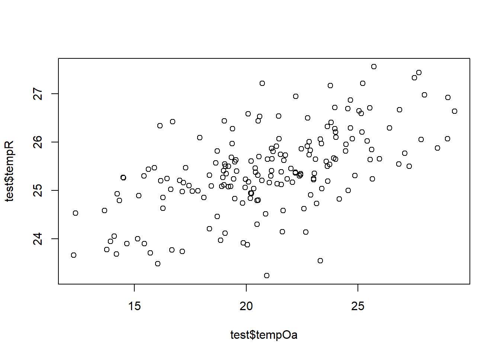

13.5 Cross-Correlation
13.5.1 Goal
You want to create a cross-correlation plot:

Figure 13.9: Building Energy Signature Plot
13.5.2 Data Basis

Figure 13.10: Raw Data Room and Outdoor Temperature for Cross Correlation Plot

Figure 13.11: Raw Data Room and Outdoor Temperature for Cross Correlation Plot
13.5.3 Solution
Create a new script, copy/paste the following code and run it:
library(redutils)
library(dplyr)
library(lubridate)
library(zoo)
library(plotly)
library(forecast)
# load time series data and aggregate mean values
dfTempOa <- read.csv("https://github.com/hslu-ige-laes/edar/raw/master/sampleData/centralOutsideTemp.csv",
stringsAsFactors=FALSE,
sep =";")
dfTempOa$time <- parse_date_time(dfTempOa$time,
order = "YmdHMS",
tz = "UTC")
dfTempOa$day <- cut(dfTempOa$time, breaks = "days")
dfTempOa <- dfTempOa %>%
group_by(day) %>%
mutate(tempOa = mean(centralOutsideTemp)) %>%
ungroup() %>%
select(day, tempOa) %>%
unique()
dfTempR <- read.csv("https://github.com/hslu-ige-laes/edar/raw/master/sampleData/flatTempHum.csv",
stringsAsFactors=FALSE,
sep =";")
dfTempR$time <- parse_date_time(dfTempR$time,
order = "YmdHMS",
tz = "UTC")
# select temperature and humidity and remove empty cells
dfTempR <- dfTempR %>% select(time, FlatA_Temp) %>% na.omit()
dfTempR$day <- cut(dfTempR$time, breaks = "days")
dfTempR <- dfTempR %>%
group_by(day) %>%
mutate(tempR = mean(FlatA_Temp)) %>%
ungroup() %>%
select(day, tempR) %>%
unique()
data <- merge(dfTempR, dfTempOa, all = TRUE) %>% unique() %>% na.omit()
data$season <- redutils::getSeason(data$day)
test <- data %>%
filter(season == "Summer")
# plot the cross correlation
# ccf(test$tempOa, test$tempR, test$season)
# plot(data)
plot(
test$tempOa,
test$tempR)
# plot diagram
plot <- ggCcf(test$tempOa,
test$tempR,
lag.max = 7) +
theme_minimal() +
scale_x_continuous(limits = c(-7, 0), breaks = seq(-7,0,1)) +
scale_y_continuous(limits = c(-1, 1), breaks = seq(-1,1,0.2)) +
labs(title="Cross Correlation between \n Indoor and Outdoor Temperature in Summer",
x ="Days (Lag)", y = "Correlation")
# make plot interactive (optional)
ggplotly(plot)